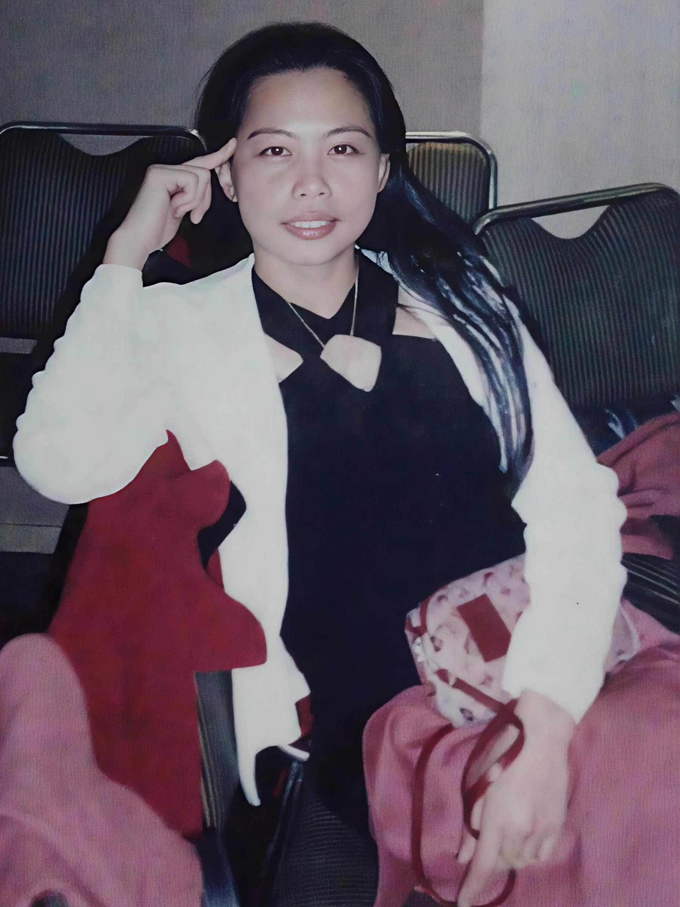
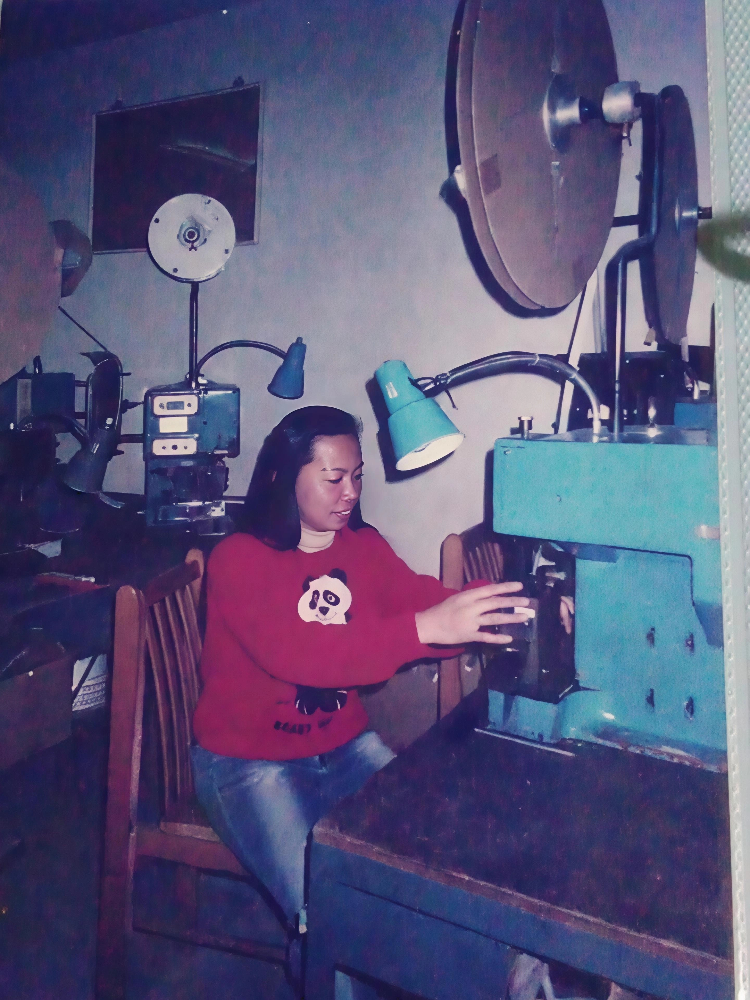
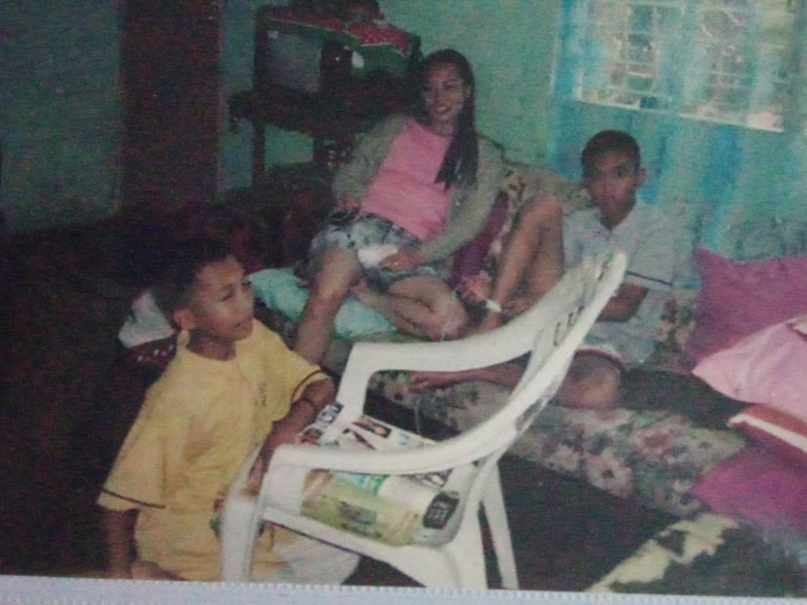
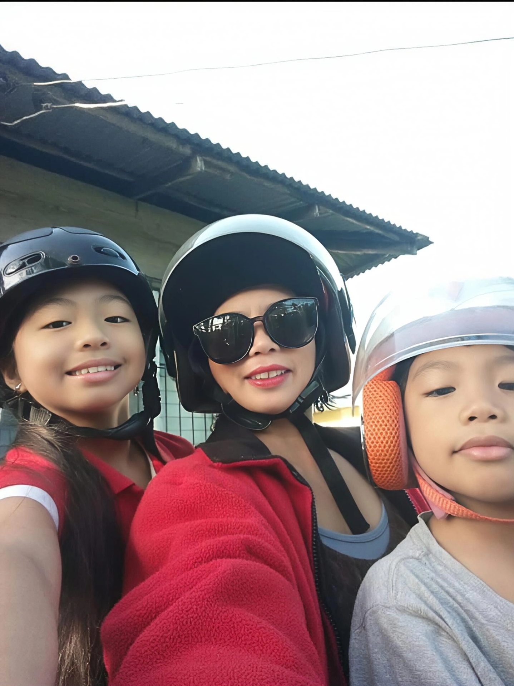
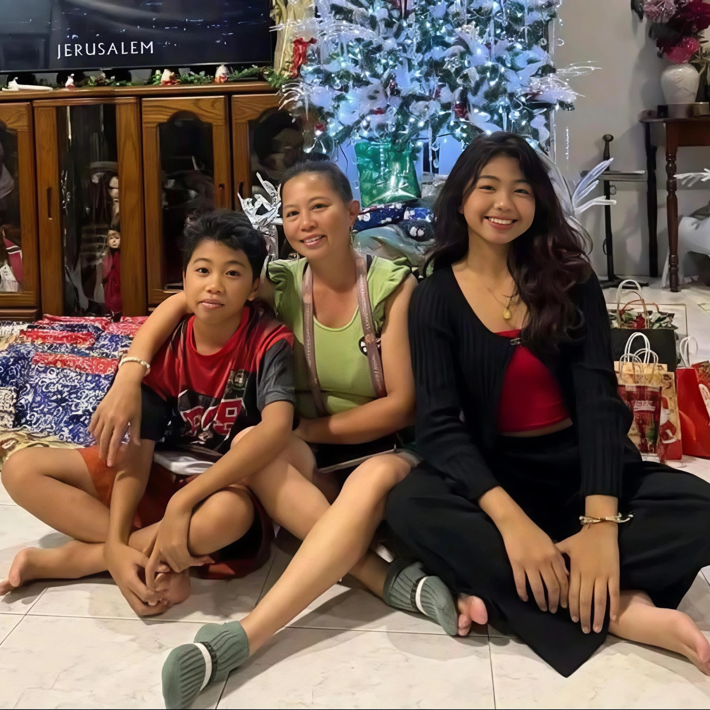
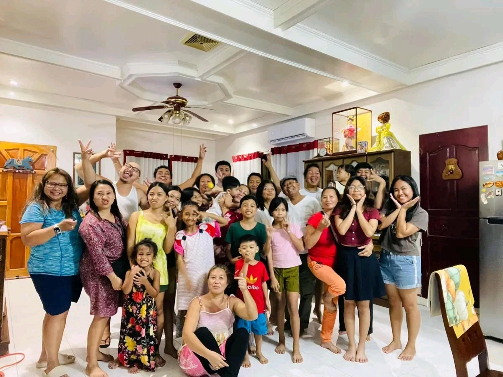

From Provider Abroad to Caregiver at Home
Beth’s Story Beyond Gender Norms

“Madaling manganak, mahirap magpaka-nanay.”
(It is easy to give birth; it is hard to be a mother.)
Beth does not say this to sound strong. She says it because motherhood, for her, is work that has to be done. When problems arrive, she absorbs them first. She looks for solutions first. And she tries to prevent the full impact from reaching her children.
Her life moves in a loop she repeats without drama: trabaho, bahay, trabaho, bahay. Work, home, work, home. It is not performance. It is structure. It is survival.
Beth’s story is shaped by a decision many mothers are never meant to face: choosing between presence and provision. When support failed and obligations remained, she stepped into the provider role herself and left the Philippines to work overseas.
But leaving did not remove motherhood. It only changed how it was carried. Abroad, she could provide more. At home, she could be present. In both places, the burden remained.

Life Abroad
In Taiwan, the first days felt isolating. She recalls three days with no way to contact anyone. She cried. Then she tried again.
“Lord, kaya ko ’to.”
(Lord, I can do this.)
In her first years abroad, she had no day off. Later, she had one rest day a month. Under another contract, she had weekly rest days but still chose extra cleaning to earn more.
She describes factory work layered over caregiving. Drop a child at school. Go to the factory. Fetch the child. Continue household work. She calls it simply double work.
Even communication had a cost. She relied on payphones and coins. She kept a basic phone, a 3310, for years because upgrading felt unnecessary when every peso could go to the family.

The Price of Distance
People call overseas workers heroes. Beth understands why. But the word hides something.
When money is the reason you leave, you still pay in another currency: time, presence, milestones you only hear about after they have passed.
Home — Less Income, More Presence
Back in the Philippines, Beth names the advantage first: family is near. Support is no longer distant. When life is heavy, someone is physically present.
But the trade-off is real. Local income is smaller. She takes double jobs to compensate. Abroad, the burden was emotional distance. At home, financial strain can arrive quickly and demand immediate decisions.
She speaks about aruga — care that is felt, not just provided. She did not want her daughter to grow up with a gap that money could not fill.



The Math of Staying
Beth knows what she traded: higher pay for daily presence. But presence does not pay the electricity bill.
Under Republic Act No. 11861, qualified solo parents may receive a ₱1,000 monthly cash subsidy.
In 2023, the Philippine Statistics Authority reported a poverty threshold of ₱13,873 per month for a family of five.
Placed side by side, the gap becomes visible. The subsidy is help, but not a solution. It cannot carry an entire month.
Emergencies do not wait for paperwork or release schedules.
When Needs Are Urgent
After the recorded interview, Beth shared that there were moments she turned to online lending when urgent needs arrived faster than income and assistance could.
She describes it as a bridge, not a preference — a way to close a gap that opens suddenly and demands an immediate answer.
If support exists on paper, does it arrive in time?
How Single Motherhood Is Seen
Beth is aware of how people talk about single mothers. She rejects the shortcuts and assumptions.
Instead of arguing, she returns to structure:
“Trabaho, bahay, trabaho, bahay.”
Consistency becomes her answer.
What Holds Her Up Now
Beth does not describe her life as pure independence. She describes survival with people nearby.
Being home means shared childcare. Familiar faces. Someone checking in. Not carrying everything alone.
Before, she endured distance to provide. Now, she accepts less income to stay. Family becomes the reason. Family becomes part of the support.

Still Carrying the Weight
Beth keeps her rule simple:
“As long as kaya kong gawin ngayon, gawin ko ngayon.”
It is not a motivational quote. It is survival logic in a life where mothers are expected to carry both paid labor and unpaid care at once.
A Borrowed Life
“Yung buhay natin ay hiram lang talaga.”
(Our life is only borrowed.)
She trains her children to stand on their own, not because she wants distance, but because she wants them ready for a future she cannot control.
Final Reflection
Beth’s story is easy to read as resilience. That reading is comforting.
But if mothers are expected to carry both income and caregiving — and praised for enduring the strain — what does society assume about who will catch them when they finally cannot?